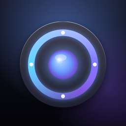

TV-Пульт
iPhone вместо пульта для вашего Smart TV.
Your iPhone as a remote for your Smart TV.
Русский
Приложение само находит телевизор в домашней Wi-Fi-сети и подключается за секунды — без выбора марки и кодов.
- Samsung Smart TV на Tizen (2016+), LG на webOS, Roku
- Крестовина, громкость, каналы, питание — бесплатно
- Pro навсегда: тачпад с курсором, клавиатура iPhone, медиа-управление
English
The app finds your TV on your home Wi-Fi and connects in seconds — no brand menus, no codes.
- Samsung Smart TVs on Tizen (2016+), LG on webOS, Roku
- D-pad, volume, channels and power — free
- Pro forever: touchpad with pointer, iPhone keyboard, media controls